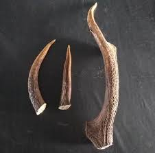

Qizil kitob — yoʻqolib borayotgan yoki yoʻqolish xavfida boʻlgan noyob oʻsimlik va hayvon turlarini qayd qiluvchi davlat hujjati. Qizil kitobda oʻsimlik va hayvon turlari sonining kamayishi, areallarining qisqarib borishi sabablari yoritiladi; ularni saqlab qolish uchun tavsiyalar berib boriladi. Tarix 1948-yilda tashkil etilgan Tabiat va tabiiy resurslarni muhofaza qilish xalqaro ittifoqi kamyob va yoʻqolib ketish xavfida boʻlgan oʻsimlik va hayvon turlarining roʻyxatini tuzish gʻoyasini amalga oshirishga kirishdi. Turlarni saqlab qolish boʻyicha maxsus xalqaro komissiya tuzilib, 1966-yildan boshlab boshqa tabiatni muhofaza qilish tashkilotlari bilan hamkorlikda xalqaro Qizil kitobning dunyo va alohida mintaqalar florasiga bagʻishlangan nashrlar chop etila boshlandi.
Oʻzbekistonning noyob va kamayib borayotgan oʻsimlik va hayvonlari toʻgʻrisidagi dastlabki maʼlumotlar 1974-yil taʼsis etilgan Qizil kitobda oʻz aksini topgan. Oʻzbekiston Qizil kitobi 1978 da taʼsis etildi. Birinchi marta Oʻzbekiston Qizil kitobining faunaga bagʻishlangan qismi 1983-yil nashrdan chiqdi. Unga umurtqali hayvonlar (baliqlar, sudralib yuruvchilar, qushlar, sut emizuvchilar) ning 63 turi kiritilgan edi. Oʻsimliklar olamining kamyob, yoʻqolib ketish xavfida boʻlgan 163 turi haqida ilk bor mukammal maʼlumotlar 1984-yil bosmadan chiqqan Qizil kitobda keltirilgan. Qizil kitob — davriy nashr hisoblanadi. Unga kiritiladigan oʻsimlik va hayvon turlari Tabiatni muhofaza qilish xalqaro ittifoqi taklif etgan tasnifga binoan 4 guruhga ajratiladi: 1) yoʻqolgan yoki yoʻqolish arafasida turgan (jiddiy muhofaza talab etuvchi) turlar; 2) yoʻqolib borayotgan (areali va soni kun sayin kamayib borayotgan, maxsus muhofazaga muhtoj) turlar; 3) kamyob, bevosita yoʻqolish xavfi boʻlmasada, kichik maydonlarda kamdankam uchraydigan (muhofazaga muhtoj) turlar; 4) muayyan vaqt davomida soni va tarqalgan maydonlar tabiiy sabablarga koʻra yoki inson taʼsirida qisqarib borayotgan (sonini nazorat qilib turish talab qilinadigan) turlar. Qizil kitobga, unga kirgan turlar maqomining oʻzgarishi, maxsus muhofaza choralari tufayli baʼzi turlar sonining tiklanishi, aksincha, yashash sharoitining oʻzgarishi va boshqalar omillar taʼsirida sonining kamayishi natijasida boshqa toifaga oʻtkazilishini yoritish maqsadida qayta nashr etiladi. Oʻzbekiston florasining yoʻqolib ketish xavfi ostida turgan 301 turining hozirgi holatini tavsiflaydigan Qizil kitob 1998-yilda qayta bosmadan chiqdi. Keyingi yillarda Oʻzbekiston faunasi turlari maqomini baholashga imkon beruvchi maʼlumotlar toʻplanib, yangi Qizil kitob 2003-yilda chop etildi. Qizil kitobning soʻnggi nashriga sut emizuvchilarning — 24, qushlarning — 51, sudralib yuruvchilarning — 16, baliqlarning — 18, halqali chuvalchanglarning — 3, mollyuskalarning — 15, boʻgʻimoyoqlilarning — 62 turi va kenja turi kiritilgan.
Oʻzbekiston faunasi va florasining baʼzi turlari Xalqaro Qizil kitobda ham oʻz aksini topgan. Unda har bir tur uchun alohida sahifa ajratilgan boʻlib, unda mazkur oʻsimlik yoki hayvon turining oʻzbekcha, ruscha, lotincha (ilmiy) nomlari, ularning sistematik oʻrni, qisqacha morfologik tavsifi, tarqalishi, yashash muhiti, tabiatdagi soni, koʻpayishi, areali va sonining oʻzgarishi sabablari, muhofaza qilish choralari va boshqalar bayon etilgan. Qizil kitobga kiritiladigan hayvon va oʻsimlik turlari boʻyicha taklifni ilmiy tekshirish muassasalari, davlat va jamoat tashkilotlari, ayrim olimlar tavsiya qilishi mumkin. Muhofaza qilinishi natijasida oʻz arealini qaytadan tiklagan va yoʻqolib ketish xavfi tugʻilmaydigan oʻsimlik va hayvon turlari Qizil kitobdan chiqariladi. Qizil kitobga kiritilgan turlar davlat qonuni asosida muhofaza qilinadi; uni buzgan yuridik va jismoniy shaxslar qonunga muvofiq javobgarlikka tortiladi. Qizil kitob — yoʻqolib borayotgan yoki yoʻqolish xavfida boʻlgan noyob oʻsimlik va hayvon turlarini qayd qiluvchi davlat hujjati. Qizil kitobda oʻsimlik va hayvon turlari sonining kamayishi, areallarining qisqarib borishi sabablari yoritiladi; ularni saqlab qolish uchun tavsiyalar berib boriladi.
Tarix 1948-yilda tashkil etilgan Tabiat va tabiiy resurslarni muhofaza qilish xalqaro ittifoqi kamyob va yoʻqolib ketish xavfida boʻlgan oʻsimlik va hayvon turlarining roʻyxatini tuzish gʻoyasini amalga oshirishga kirishdi. Turlarni saqlab qolish boʻyicha maxsus xalqaro komissiya tuzilib, 1966-yildan boshlab boshqa tabiatni muhofaza qilish tashkilotlari bilan hamkorlikda xalqaro Qizil kitobning dunyo va alohida mintaqalar florasiga bagʻishlangan nashrlar chop etila boshlandi.

Oʻzbekistonning noyob va kamayib borayotgan oʻsimlik va hayvonlari toʻgʻrisidagi dastlabki maʼlumotlar 1974-yil taʼsis etilgan Qizil kitobda oʻz aksini topgan. Oʻzbekiston Qizil kitobi 1978 da taʼsis etildi. Birinchi marta Oʻzbekiston Qizil kitobining faunaga bagʻishlangan qismi 1983-yil nashrdan chiqdi. Unga umurtqali hayvonlar (baliqlar, sudralib yuruvchilar, qushlar, sut emizuvchilar) ning 63 turi kiritilgan edi. Oʻsimliklar olamining kamyob, yoʻqolib ketish xavfida boʻlgan 163 turi haqida ilk bor mukammal maʼlumotlar 1984-yil bosmadan chiqqan Qizil kitobda keltirilgan. Qizil kitob — davriy nashr hisoblanadi. Unga kiritiladigan oʻsimlik va hayvon turlari Tabiatni muhofaza qilish xalqaro ittifoqi taklif etgan tasnifga binoan 4 guruhga ajratiladi: 1) yoʻqolgan yoki yoʻqolish arafasida turgan (jiddiy muhofaza talab etuvchi) turlar; 2) yoʻqolib borayotgan (areali va soni kun sayin kamayib borayotgan, maxsus muhofazaga muhtoj) turlar; 3) kamyob, bevosita yoʻqolish xavfi boʻlmasada, kichik maydonlarda kamdankam uchraydigan (muhofazaga muhtoj) turlar; 4) muayyan vaqt davomida soni va tarqalgan maydonlar tabiiy sabablarga koʻra yoki inson taʼsirida qisqarib borayotgan (sonini nazorat qilib turish talab qilinadigan) turlar. Qizil kitobga, unga kirgan turlar maqomining oʻzgarishi, maxsus muhofaza choralari tufayli baʼzi turlar sonining tiklanishi, aksincha, yashash sharoitining oʻzgarishi va boshqalar omillar taʼsirida sonining kamayishi natijasida boshqa toifaga oʻtkazilishini yoritish maqsadida qayta nashr etiladi. Oʻzbekiston florasining yoʻqolib ketish xavfi ostida turgan 301 turining hozirgi holatini tavsiflaydigan Qizil kitob 1998-yilda qayta bosmadan chiqdi. Keyingi yillarda Oʻzbekiston faunasi turlari maqomini baholashga imkon beruvchi maʼlumotlar toʻplanib, yangi Qizil kitob 2003-yilda chop etildi. Qizil kitobning soʻnggi nashriga sut emizuvchilarning — 24, qushlarning — 51, sudralib yuruvchilarning — 16, baliqlarning — 18, halqali chuvalchanglarning — 3, mollyuskalarning — 15, boʻgʻimoyoqlilarning — 62 turi va kenja turi kiritilgan. Oʻzbekiston faunasi va florasining baʼzi turlari Xalqaro Qizil kitobda ham oʻz aksini topgan. Unda har bir tur uchun alohida sahifa ajratilgan boʻlib, unda mazkur oʻsimlik yoki hayvon turining oʻzbekcha, ruscha, lotincha (ilmiy) nomlari, ularning sistematik oʻrni, qisqacha morfologik tavsifi, tarqalishi, yashash muhiti, tabiatdagi soni, koʻpayishi, areali va sonining oʻzgarishi sabablari, muhofaza qilish choralari va boshqalar bayon etilgan.
Qizil kitobga kiritiladigan hayvon va oʻsimlik turlari boʻyicha taklifni ilmiy tekshirish muassasalari, davlat va jamoat tashkilotlari, ayrim olimlar tavsiya qilishi mumkin. Muhofaza qilinishi natijasida oʻz arealini qaytadan tiklagan va yoʻqolib ketish xavfi tugʻilmaydigan oʻsimlik va hayvon turlari Qizil kitobdan chiqariladi. Qizil kitobga kiritilgan turlar davlat qonuni asosida muhofaza qilinadi; uni buzgan yuridik va jismoniy shaxslar qonunga muvofiq javobgarlikka tortiladi.Qizil kitob — yoʻqolib borayotgan yoki yoʻqolish xavfida boʻlgan noyob oʻsimlik va hayvon turlarini qayd qiluvchi davlat hujjati. Qizil kitobda oʻsimlik va hayvon turlari sonining kamayishi, areallarining qisqarib borishi sabablari yoritiladi; ularni saqlab qolish uchun tavsiyalar berib boriladi. Tarix 1948-yilda tashkil etilgan Tabiat va tabiiy resurslarni muhofaza qilish xalqaro ittifoqi kamyob va yoʻqolib ketish xavfida boʻlgan oʻsimlik va hayvon turlarining roʻyxatini tuzish gʻoyasini amalga oshirishga kirishdi. Turlarni saqlab qolish boʻyicha maxsus xalqaro komissiya tuzilib, 1966-yildan boshlab boshqa tabiatni muhofaza qilish tashkilotlari bilan hamkorlikda xalqaro Qizil kitobning dunyo va alohida mintaqalar florasiga bagʻishlangan nashrlar chop etila boshlandi.
Oʻzbekistonning noyob va kamayib borayotgan oʻsimlik va hayvonlari toʻgʻrisidagi dastlabki maʼlumotlar 1974-yil taʼsis etilgan Qizil kitobda oʻz aksini topgan. Oʻzbekiston Qizil kitobi 1978 da taʼsis etildi. Birinchi marta Oʻzbekiston Qizil kitobining faunaga bagʻishlangan qismi 1983-yil nashrdan chiqdi. Unga umurtqali hayvonlar (baliqlar, sudralib yuruvchilar, qushlar, sut emizuvchilar) ning 63 turi kiritilgan edi. Oʻsimliklar olamining kamyob, yoʻqolib ketish xavfida boʻlgan 163 turi haqida ilk bor mukammal maʼlumotlar 1984-yil bosmadan chiqqan Qizil kitobda keltirilgan. Qizil kitob — davriy nashr hisoblanadi. Unga kiritiladigan oʻsimlik va hayvon turlari Tabiatni muhofaza qilish xalqaro ittifoqi taklif etgan tasnifga binoan 4 guruhga ajratiladi: 1) yoʻqolgan yoki yoʻqolish arafasida turgan (jiddiy muhofaza talab etuvchi) turlar; 2) yoʻqolib borayotgan (areali va soni kun sayin kamayib borayotgan, maxsus muhofazaga muhtoj) turlar; 3) kamyob, bevosita yoʻqolish xavfi boʻlmasada, kichik maydonlarda kamdankam uchraydigan (muhofazaga muhtoj) turlar; 4) muayyan vaqt davomida soni va tarqalgan maydonlar tabiiy sabablarga koʻra yoki inson taʼsirida qisqarib borayotgan (sonini nazorat qilib turish talab qilinadigan) turlar. Qizil kitobga, unga kirgan turlar maqomining oʻzgarishi, maxsus muhofaza choralari tufayli baʼzi turlar sonining tiklanishi, aksincha, yashash sharoitining oʻzgarishi va boshqalar omillar taʼsirida sonining kamayishi natijasida boshqa toifaga oʻtkazilishini yoritish maqsadida qayta nashr etiladi. Oʻzbekiston florasining yoʻqolib ketish xavfi ostida turgan 301 turining hozirgi holatini tavsiflaydigan Qizil kitob 1998-yilda qayta bosmadan chiqdi. Keyingi yillarda Oʻzbekiston faunasi turlari maqomini baholashga imkon beruvchi maʼlumotlar toʻplanib, yangi Qizil kitob 2003-yilda chop etildi. Qizil kitobning soʻnggi nashriga sut emizuvchilarning — 24, qushlarning — 51, sudralib yuruvchilarning — 16, baliqlarning — 18, halqali chuvalchanglarning — 3, mollyuskalarning — 15, boʻgʻimoyoqlilarning — 62 turi va kenja turi kiritilgan. Oʻzbekiston faunasi va florasining baʼzi turlari Xalqaro Qizil kitobda ham oʻz aksini topgan. Unda har bir tur uchun alohida sahifa ajratilgan boʻlib, unda mazkur oʻsimlik yoki hayvon turining oʻzbekcha, ruscha, lotincha (ilmiy) nomlari, ularning sistematik oʻrni, qisqacha morfologik tavsifi, tarqalishi, yashash muhiti, tabiatdagi soni, koʻpayishi, areali va sonining oʻzgarishi sabablari, muhofaza qilish choralari va boshqalar bayon etilgan. Qizil kitobga kiritiladigan hayvon va oʻsimlik turlari boʻyicha taklifni ilmiy tekshirish muassasalari, davlat va jamoat tashkilotlari, ayrim olimlar tavsiya qilishi mumkin. Muhofaza qilinishi natijasida oʻz arealini qaytadan tiklagan va yoʻqolib ketish xavfi tugʻilmaydigan oʻsimlik va hayvon turlari Qizil kitobdan chiqariladi. Qizil kitobga kiritilgan turlar davlat qonuni asosida muhofaza qilinadi; uni buzgan yuridik va jismoniy shaxslar qonunga muvofiq javobgarlikka tortiladi. Qizil kitob — yoʻqolib borayotgan yoki yoʻqolish xavfida boʻlgan noyob oʻsimlik va hayvon turlarini qayd qiluvchi davlat hujjati. Qizil kitobda oʻsimlik va hayvon turlari sonining kamayishi, areallarining qisqarib borishi sabablari yoritiladi; ularni saqlab qolish uchun tavsiyalar berib boriladi. Tarix 1948-yilda tashkil etilgan Tabiat va tabiiy resurslarni muhofaza qilish xalqaro ittifoqi kamyob va yoʻqolib ketish xavfida boʻlgan oʻsimlik va hayvon turlarining roʻyxatini tuzish gʻoyasini amalga oshirishga kirishdi. Turlarni saqlab qolish boʻyicha maxsus xalqaro komissiya tuzilib, 1966-yildan boshlab boshqa tabiatni muhofaza qilish tashkilotlari bilan hamkorlikda xalqaro Qizil kitobning dunyo va alohida mintaqalar florasiga bagʻishlangan nashrlar chop etila boshlandi.

Oʻzbekistonning noyob va kamayib borayotgan oʻsimlik va hayvonlari toʻgʻrisidagi dastlabki maʼlumotlar 1974-yil taʼsis etilgan Qizil kitobda oʻz aksini topgan. Oʻzbekiston Qizil kitobi 1978 da taʼsis etildi. Birinchi marta Oʻzbekiston Qizil kitobining faunaga bagʻishlangan qismi 1983-yil nashrdan chiqdi. Unga umurtqali hayvonlar (baliqlar, sudralib yuruvchilar, qushlar, sut emizuvchilar) ning 63 turi kiritilgan edi. Oʻsimliklar olamining kamyob, yoʻqolib ketish xavfida boʻlgan 163 turi haqida ilk bor mukammal maʼlumotlar 1984-yil bosmadan chiqqan Qizil kitobda keltirilgan. Qizil kitob — davriy nashr hisoblanadi. Unga kiritiladigan oʻsimlik va hayvon turlari Tabiatni muhofaza qilish xalqaro ittifoqi taklif etgan tasnifga binoan 4 guruhga ajratiladi: 1) yoʻqolgan yoki yoʻqolish arafasida turgan (jiddiy muhofaza talab etuvchi) turlar; 2) yoʻqolib borayotgan (areali va soni kun sayin kamayib borayotgan, maxsus muhofazaga muhtoj) turlar; 3) kamyob, bevosita yoʻqolish xavfi boʻlmasada, kichik maydonlarda kamdankam uchraydigan (muhofazaga muhtoj) turlar; 4) muayyan vaqt davomida soni va tarqalgan maydonlar tabiiy sabablarga koʻra yoki inson taʼsirida qisqarib borayotgan (sonini nazorat qilib turish talab qilinadigan) turlar. Qizil kitobga, unga kirgan turlar maqomining oʻzgarishi, maxsus muhofaza choralari tufayli baʼzi turlar sonining tiklanishi, aksincha, yashash sharoitining oʻzgarishi va boshqalar omillar taʼsirida sonining kamayishi natijasida boshqa toifaga oʻtkazilishini yoritish maqsadida qayta nashr etiladi. Oʻzbekiston florasining yoʻqolib ketish xavfi ostida turgan 301 turining hozirgi holatini tavsiflaydigan Qizil kitob 1998-yilda qayta bosmadan chiqdi. Keyingi yillarda Oʻzbekiston faunasi turlari maqomini baholashga imkon beruvchi maʼlumotlar toʻplanib, yangi Qizil kitob 2003-yilda chop etildi. Qizil kitobning soʻnggi nashriga sut emizuvchilarning — 24, qushlarning — 51, sudralib yuruvchilarning — 16, baliqlarning — 18, halqali chuvalchanglarning — 3, mollyuskalarning — 15, boʻgʻimoyoqlilarning — 62 turi va kenja turi kiritilgan. Oʻzbekiston faunasi va florasining baʼzi turlari Xalqaro Qizil kitobda ham oʻz aksini topgan. Unda har bir tur uchun alohida sahifa ajratilgan boʻlib, unda mazkur oʻsimlik yoki hayvon turining oʻzbekcha, ruscha, lotincha (ilmiy) nomlari, ularning sistematik oʻrni, qisqacha morfologik tavsifi, tarqalishi, yashash muhiti, tabiatdagi soni, koʻpayishi, areali va sonining oʻzgarishi sabablari, muhofaza qilish choralari va boshqalar bayon etilgan.
Qizil kitobga kiritiladigan hayvon va oʻsimlik turlari boʻyicha taklifni ilmiy tekshirish muassasalari, davlat va jamoat tashkilotlari, ayrim olimlar tavsiya qilishi mumkin. Muhofaza qilinishi natijasida oʻz arealini qaytadan tiklagan va yoʻqolib ketish xavfi tugʻilmaydigan oʻsimlik va hayvon turlari Qizil kitobdan chiqariladi. Qizil kitobga kiritilgan turlar davlat qonuni asosida muhofaza qilinadi; uni buzgan yuridik va jismoniy shaxslar qonunga muvofiq javobgarlikka tortiladi. Qizil kitob — yoʻqolib borayotgan yoki yoʻqolish xavfida boʻlgan noyob oʻsimlik va hayvon turlarini qayd qiluvchi davlat hujjati. Qizil kitobda oʻsimlik va hayvon turlari sonining kamayishi, areallarining qisqarib borishi sabablari yoritiladi; ularni saqlab qolish uchun tavsiyalar berib boriladi. Tarix 1948-yilda tashkil etilgan Tabiat va tabiiy resurslarni muhofaza qilish xalqaro ittifoqi kamyob va yoʻqolib ketish xavfida boʻlgan oʻsimlik va hayvon turlarining roʻyxatini tuzish gʻoyasini amalga oshirishga kirishdi. Turlarni saqlab qolish boʻyicha maxsus xalqaro komissiya tuzilib, 1966-yildan boshlab boshqa tabiatni muhofaza qilish tashkilotlari bilan hamkorlikda xalqaro Qizil kitobning dunyo va alohida mintaqalar florasiga bagʻishlangan nashrlar chop etila boshlandi.
Oʻzbekistonning noyob va kamayib borayotgan oʻsimlik va hayvonlari toʻgʻrisidagi dastlabki maʼlumotlar 1974-yil taʼsis etilgan Qizil kitobda oʻz aksini topgan. Oʻzbekiston Qizil kitobi 1978 da taʼsis etildi. Birinchi marta Oʻzbekiston Qizil kitobining faunaga bagʻishlangan qismi 1983-yil nashrdan chiqdi. Unga umurtqali hayvonlar (baliqlar, sudralib yuruvchilar, qushlar, sut emizuvchilar) ning 63 turi kiritilgan edi. Oʻsimliklar olamining kamyob, yoʻqolib ketish xavfida boʻlgan 163 turi haqida ilk bor mukammal maʼlumotlar 1984-yil bosmadan chiqqan Qizil kitobda keltirilgan. Qizil kitob — davriy nashr hisoblanadi. Unga kiritiladigan oʻsimlik va hayvon turlari Tabiatni muhofaza qilish xalqaro ittifoqi taklif etgan tasnifga binoan 4 guruhga ajratiladi: 1) yoʻqolgan yoki yoʻqolish arafasida turgan (jiddiy muhofaza talab etuvchi) turlar; 2) yoʻqolib borayotgan (areali va soni kun sayin kamayib borayotgan, maxsus muhofazaga muhtoj) turlar; 3) kamyob, bevosita yoʻqolish xavfi boʻlmasada, kichik maydonlarda kamdankam uchraydigan (muhofazaga muhtoj) turlar; 4) muayyan vaqt davomida soni va tarqalgan maydonlar tabiiy sabablarga koʻra yoki inson taʼsirida qisqarib borayotgan (sonini nazorat qilib turish talab qilinadigan) turlar. Qizil kitobga, unga kirgan turlar maqomining oʻzgarishi, maxsus muhofaza choralari tufayli baʼzi turlar sonining tiklanishi, aksincha, yashash sharoitining oʻzgarishi va boshqalar omillar taʼsirida sonining kamayishi natijasida boshqa toifaga oʻtkazilishini yoritish maqsadida qayta nashr etiladi. Oʻzbekiston florasining yoʻqolib ketish xavfi ostida turgan 301 turining hozirgi holatini tavsiflaydigan Qizil kitob 1998-yilda qayta bosmadan chiqdi. Keyingi yillarda Oʻzbekiston faunasi turlari maqomini baholashga imkon beruvchi maʼlumotlar toʻplanib, yangi Qizil kitob 2003-yilda chop etildi. Qizil kitobning soʻnggi nashriga sut emizuvchilarning — 24, qushlarning — 51, sudralib yuruvchilarning — 16, baliqlarning — 18, halqali chuvalchanglarning — 3, mollyuskalarning — 15, boʻgʻimoyoqlilarning — 62 turi va kenja turi kiritilgan.

Oʻzbekiston faunasi va florasining baʼzi turlari Xalqaro Qizil kitobda ham oʻz aksini topgan. Unda har bir tur uchun alohida sahifa ajratilgan boʻlib, unda mazkur oʻsimlik yoki hayvon turining oʻzbekcha, ruscha, lotincha (ilmiy) nomlari, ularning sistematik oʻrni, qisqacha morfologik tavsifi, tarqalishi, yashash muhiti, tabiatdagi soni, koʻpayishi, areali va sonining oʻzgarishi sabablari, muhofaza qilish choralari va boshqalar bayon etilgan. Qizil kitobga kiritiladigan hayvon va oʻsimlik turlari boʻyicha taklifni ilmiy tekshirish muassasalari, davlat va jamoat tashkilotlari, ayrim olimlar tavsiya qilishi mumkin. Muhofaza qilinishi natijasida oʻz arealini qaytadan tiklagan va yoʻqolib ketish xavfi tugʻilmaydigan oʻsimlik va hayvon turlari Qizil kitobdan chiqariladi. Qizil kitobga kiritilgan turlar davlat qonuni asosida muhofaza qilinadi; uni buzgan yuridik va jismoniy shaxslar qonunga muvofiq javobgarlikka tortiladi. Qizil kitob — yoʻqolib borayotgan yoki yoʻqolish xavfida boʻlgan noyob oʻsimlik va hayvon turlarini qayd qiluvchi davlat hujjati. Qizil kitobda oʻsimlik va hayvon turlari sonining kamayishi, areallarining qisqarib borishi sabablari yoritiladi; ularni saqlab qolish uchun tavsiyalar berib boriladi.
Tarix 1948-yilda tashkil etilgan Tabiat va tabiiy resurslarni muhofaza qilish xalqaro ittifoqi kamyob va yoʻqolib ketish xavfida boʻlgan oʻsimlik va hayvon turlarining roʻyxatini tuzish gʻoyasini amalga oshirishga kirishdi. Turlarni saqlab qolish boʻyicha maxsus xalqaro komissiya tuzilib, 1966-yildan boshlab boshqa tabiatni muhofaza qilish tashkilotlari bilan hamkorlikda xalqaro Qizil kitobning dunyo va alohida mintaqalar florasiga bagʻishlangan nashrlar chop etila boshlandi. Oʻzbekistonning noyob va kamayib borayotgan oʻsimlik va hayvonlari toʻgʻrisidagi dastlabki maʼlumotlar 1974-yil taʼsis etilgan Qizil kitobda oʻz aksini topgan. Oʻzbekiston Qizil kitobi 1978 da taʼsis etildi. Birinchi marta Oʻzbekiston Qizil kitobining faunaga bagʻishlangan qismi 1983-yil nashrdan chiqdi. Unga umurtqali hayvonlar (baliqlar, sudralib yuruvchilar, qushlar, sut emizuvchilar) ning 63 turi kiritilgan edi. Oʻsimliklar olamining kamyob, yoʻqolib ketish xavfida boʻlgan 163 turi haqida ilk bor mukammal maʼlumotlar 1984-yil bosmadan chiqqan Qizil kitobda keltirilgan. Qizil kitob — davriy nashr hisoblanadi. Unga kiritiladigan oʻsimlik va hayvon turlari Tabiatni muhofaza qilish xalqaro ittifoqi taklif etgan tasnifga binoan 4 guruhga ajratiladi: 1) yoʻqolgan yoki yoʻqolish arafasida turgan (jiddiy muhofaza talab etuvchi) turlar; 2) yoʻqolib borayotgan (areali va soni kun sayin kamayib borayotgan, maxsus muhofazaga muhtoj) turlar; 3) kamyob, bevosita yoʻqolish xavfi boʻlmasada, kichik maydonlarda kamdankam uchraydigan (muhofazaga muhtoj) turlar; 4) muayyan vaqt davomida soni va tarqalgan maydonlar tabiiy sabablarga koʻra yoki inson taʼsirida qisqarib borayotgan (sonini nazorat qilib turish talab qilinadigan) turlar. Qizil kitobga, unga kirgan turlar maqomining oʻzgarishi, maxsus muhofaza choralari tufayli baʼzi turlar sonining tiklanishi, aksincha, yashash sharoitining oʻzgarishi va boshqalar omillar taʼsirida sonining kamayishi natijasida boshqa toifaga oʻtkazilishini yoritish maqsadida qayta nashr etiladi. Oʻzbekiston florasining yoʻqolib ketish xavfi ostida turgan 301 turining hozirgi holatini tavsiflaydigan Qizil kitob 1998-yilda qayta bosmadan chiqdi. Keyingi yillarda Oʻzbekiston faunasi turlari maqomini baholashga imkon beruvchi maʼlumotlar toʻplanib, yangi Qizil kitob 2003-yilda chop etildi. Qizil kitobning soʻnggi nashriga sut emizuvchilarning — 24, qushlarning — 51, sudralib yuruvchilarning — 16, baliqlarning — 18, halqali chuvalchanglarning — 3, mollyuskalarning — 15, boʻgʻimoyoqlilarning — 62 turi va kenja turi kiritilgan.
Oʻzbekiston faunasi va florasining baʼzi turlari Xalqaro Qizil kitobda ham oʻz aksini topgan. Unda har bir tur uchun alohida sahifa ajratilgan boʻlib, unda mazkur oʻsimlik yoki hayvon turining oʻzbekcha, ruscha, lotincha (ilmiy) nomlari, ularning sistematik oʻrni, qisqacha morfologik tavsifi, tarqalishi, yashash muhiti, tabiatdagi soni, koʻpayishi, areali va sonining oʻzgarishi sabablari, muhofaza qilish choralari va boshqalar bayon etilgan. Qizil kitobga kiritiladigan hayvon va oʻsimlik turlari boʻyicha taklifni ilmiy tekshirish muassasalari, davlat va jamoat tashkilotlari, ayrim olimlar tavsiya qilishi mumkin. Muhofaza qilinishi natijasida oʻz arealini qaytadan tiklagan va yoʻqolib ketish xavfi tugʻilmaydigan oʻsimlik va hayvon turlari Qizil kitobdan chiqariladi. Qizil kitobga kiritilgan turlar davlat qonuni asosida muhofaza qilinadi; uni buzgan yuridik va jismoniy shaxslar qonunga muvofiq javobgarlikka tortiladi.